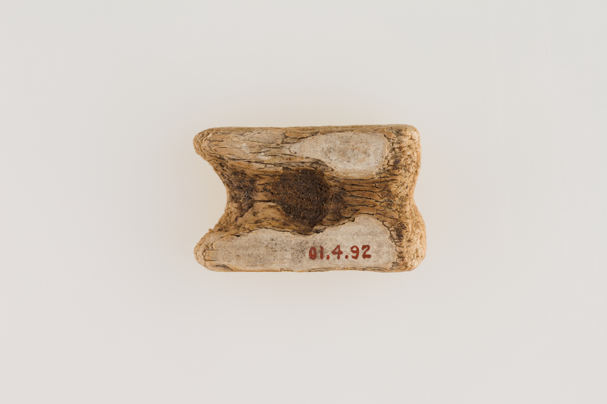
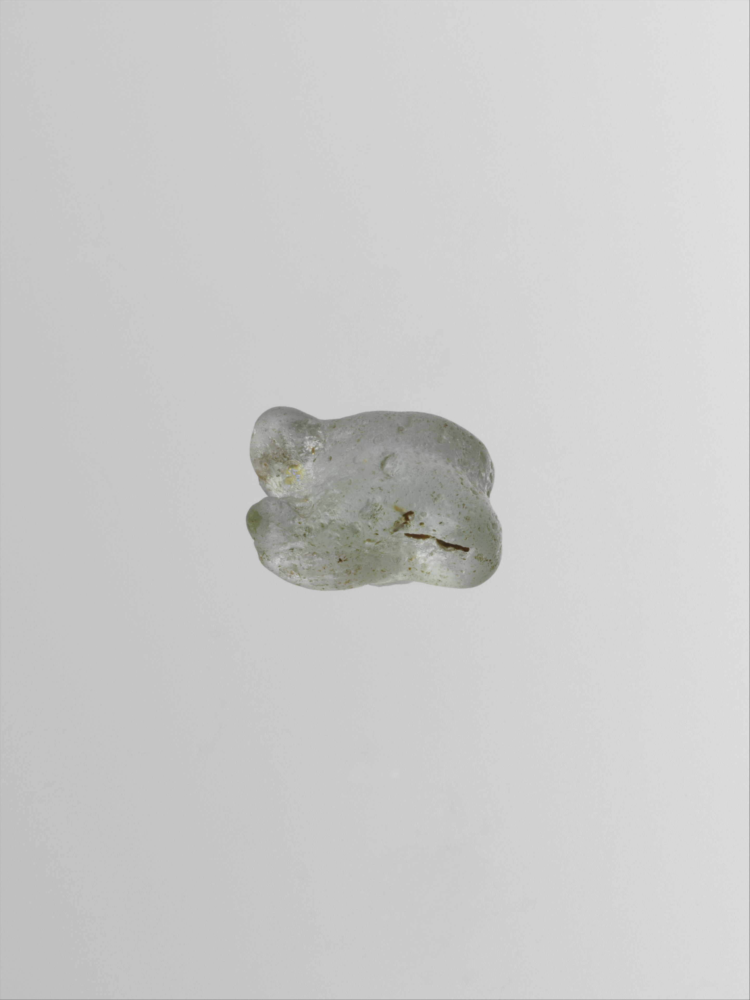
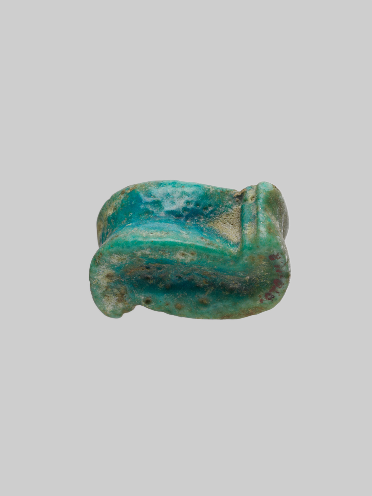
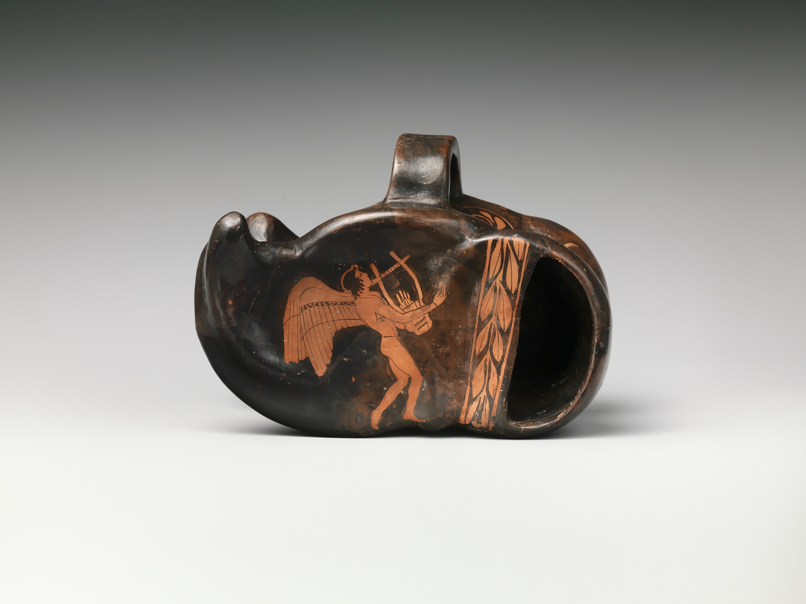

Question directrice
Comment passer de « je vois » à « je pense », puis à « je vérifie » ?
Activité 4 · Interpréter avec prudence
Un atelier de méthode pour décrire un os ou un objet avant de proposer ses usages possibles et de chercher comment vérifier chaque hypothèse.
Prototype prudent : cinq visuels provisoires A à E testent la mise en page et le futur parcours. Ils ne constituent pas un corpus réel et ne doivent déterminer ni réponse, ni datation, ni fonction, ni conclusion archéologique.
Comprendre l'activité
Comment passer de « je vois » à « je pense », puis à « je vérifie » ?
Ils décrivent un objet, proposent plusieurs hypothèses, recherchent les informations manquantes et rédigent une conclusion prudente.
Comprendre qu'un même objet peut changer de fonction, de contexte et de signification au cours de sa vie.
L'élève sépare clairement les données observées des interprétations et indique comment contrôler celles-ci.
Ce qui est directement visible : matière, forme, traces, dimensions et état.
Une proposition possible, formulée sans la présenter comme un fait.
Une explication argumentée qui relie plusieurs indices et un contexte.
Les comparaisons, analyses, sources ou informations de provenance nécessaires.
Déroulement
Écrire uniquement ce qui est visible, sans nommer une fonction.
Relever les traces, aménagements ou absences qui méritent une explication.
Imaginer au moins deux usages ou histoires possibles et les relier à des indices.
Lister les comparaisons, analyses, textes ou données de contexte qui départageraient les hypothèses.
Distinguer ce qui est établi, plausible et encore inconnu.
Organisation : petits groupes sur un même objet ou des cartes différentes, puis comparaison des raisonnements plutôt que recherche d'une réponse unique.
Variante institutionnelle
L'atelier peut partir d'un objet de collection choisi et documenté par l'institution, d'une réplique ou d'une photographie. Une image ou une réplique est une variante pédagogique : elle ne remplace pas entièrement l'observation de l'original et de son contexte.
HTML imprimable, PDF pilotes et PDF WIP
Versions A4 de méthode. Les objets A à E restent des gabarits neutres à compléter après validation.
Fiche · Guide · Cartes objets · Corrigé de méthode · Kit complet
Word éditable : Fiche · Guide · Cartes objets · Corrigé · Kit complet
Exports conservés pour les tests internes, non versions finales.
Fiche · Guide · Objets A-E · Pistes · Visuels
Prolongement interactif
Ce prototype moderne explore un principe de message codé attribué à un texte antique : l'utilisateur tourne un astragale percé et suit un fil entre les trous. Il ne constitue pas une reconstitution antique définitive.
Cette sélection sert uniquement à tester la mise en page, les types de supports et un futur parcours comparatif. Les informations issues des notices sources restent à vérifier : elles ne constituent ni les réponses de l'activité, ni un corpus archéologique validé.

Visuel provisoire — source, pertinence scientifique et droits à valider avant publication définitive.
Emplacement A. Notice de la source, à vérifier : osselet en os, Égypte, vers 3100-2900 av. J.-C. Ces données ne servent pas de réponse avant validation.
The Metropolitan Museum of Art, 01.4.92, Open Access et domaine public indiqués par le musée. Licence indiquée par la source, vérification humaine encore nécessaire.

Visuel provisoire — source, pertinence scientifique et droits à valider avant publication définitive.
Emplacement B. Notice de la source, à vérifier : astragale en bronze, monde grec ou romain, vers le IIIe siècle av. J.-C.-IIe siècle apr. J.-C. Ces données ne déterminent aucune fonction.
The Metropolitan Museum of Art, X.229, Open Access et domaine public indiqués par le musée. Licence indiquée par la source, vérification humaine encore nécessaire.

Visuel provisoire — source, pertinence scientifique et droits à valider avant publication définitive.
Emplacement C. Notice de la source, à vérifier : astragale en verre, vers 225 av. J.-C.-75 apr. J.-C. Matière, datation et usage pédagogique restent à contrôler.
The Metropolitan Museum of Art, 81.10.161, Open Access et domaine public indiqués par le musée. Licence indiquée par la source, vérification humaine encore nécessaire.

Visuel provisoire — source, pertinence scientifique et droits à valider avant publication définitive.
Emplacement D. Notice de la source, à vérifier : astragale en faïence, IIIe-IIe siècle av. J.-C. Cette notice ne permet pas, seule, d'établir le statut ou la fonction de l'objet.
The Metropolitan Museum of Art, 1970.11.3, Open Access et domaine public indiqués par le musée. Licence indiquée par la source, vérification humaine encore nécessaire.

Visuel provisoire — source, pertinence scientifique et droits à valider avant publication définitive.
Emplacement E. Notice de la source, à vérifier : vase en terre cuite en forme d'astragale, vers 460 av. J.-C. Son rôle dans l'activité reste à définir et valider.
The Metropolitan Museum of Art, 40.11.22, Open Access et domaine public indiqués par le musée. Licence indiquée par la source, vérification humaine encore nécessaire.
Validation requise : confirmer les cinq numéros d'inventaire, dates, matériaux, traductions de notices, droits et fonctions pédagogiques, puis décider quels objets composeront réellement le corpus A-E.
| Support | Usage prévu | Statut |
|---|---|---|
| Objets A à E | Comparer plusieurs biographies possibles d'objets liés à l'astragale. | Visuels de maquette uniquement ; corpus, notices, droits et sélection à valider. |
| Fiche élève | Structurer observation, hypothèse et vérification. | Prototype à actualiser avec le corpus validé. |
| Corrigé | Guider le raisonnement. | Pistes prudentes, pas fonctions certaines. |
| Jeu de codage | Explorer un usage technique possible. | Adaptation moderne à valider historiquement et pour l'accessibilité. |
Classer chaque phrase comme observation, hypothèse, interprétation ou moyen de vérification.
Relier une hypothèse à plusieurs indices sans la transformer en certitude.
Utiliser des étiquettes de vocabulaire, dicter les observations ou travailler collectivement sur un seul objet.
Traçabilité et limites
Le jeu de codage est une adaptation pédagogique moderne. Le modèle 3D et les formulations historiques doivent encore être validés ; il n'est pas présenté comme une preuve ou une reconstitution définitive.
Version actuelle : atelier de méthode, cinq emplacements illustrés provisoirement et jeu de prolongement utilisables pour tester la maquette, avec limites explicites.
Objectif final : constituer puis valider le corpus A-E et ses notices, actualiser les imprimables, faire relire les interprétations et proposer une alternative accessible au jeu 3D.